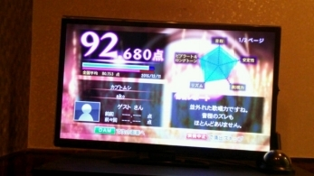
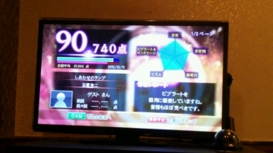
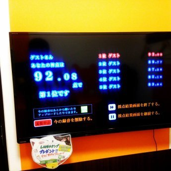

| モテモテになる！カラオケ採点必勝ガイド: カリスマボイストレーナーが教えるカラオケ採点必勝テクニック | |
| 本山nackeyナオト | |
| nihonongakukousikyoukaisyupan (2016) | |
【イントロダクション】
「え～っ、誰でも簡単に！カラオケ採点90点以上保障！？」
「え～っ、本格ボイストレーニング付？！誰でも簡単に実行？！」
とこの書籍をごらんのあなたは驚かれているでしょう。
でも私のボーカル教室ではカラオケどころか
歌唱力がプロ並みにUPして
それこそ「人生が変わったって！」とおっしゃる方や
見る見る輝きを増し人間的に大きく成長する方
本当にたくさん数多くいらっしゃいます。
また、あなたが思っている以上に
「歌唱力」というのは重要なコミニケーションツールのひとつです。
想像してみてください。あなたが歌うと
まわりの方がたがウットリとして恍惚の表情で聴きいる姿を。
そしてその採点は９０点以上。。。
きっと、称賛の声があがり、異性からもモテモテ
お仕事の契約もいい方向につながる。。と思いませんか？
「でも、私は音痴なんですけど。。」
「自分に自信がもてないのですが。。」
「私には無理だと思うのですが。。」
大丈夫！本書にしたがって実行すれば
必ずカラオケ達人になれます。
カラオケ採点９０点以上続出、本当にお約束します！
あなたにはボイストレーニング指導２５年のカリスマといわれた
わたくし本山がついております！一緒にがんばりましょう！
そもそも「カラオケ」というモノはどんなレベルの方が歌ってもそれなりに
聴こえるようにつくられたマシンです。
そして歌の練習などしない方がほとんどです。
歌ほど少しの練習とコツをつかめば
すごくうまくなるものはないのに。。
さらに、本書で紹介するウラ技やマル秘の練習や方法をつかえば
そんなに努力しなくてもカラオケ採点９０点以上は確実に
叩き出せるのです！
また、本書はただ単に歌のレベルアップだけではなく
■仕事に活かそう！カラオケ採点必勝ガイド
■デキる社員になるためのカラオケ必勝テク
■カラオケでモテモテになる方法
■カラオケで誰からも好かれ営業力ＵＰ！
といったマル秘の方法も網羅しています。
さあ、あなた本来の能力をとりもどしましょう！
私がこれからあなたを磨きます！
おおいに輝いて下さい。輝く事に遠慮はいりません。
あなたが輝けばあなたのまわりも輝きます。
そうするとあなたの会社の業績もあがり
そしてこの社会全体が輝きだすのです。
楽しみながら、ワクワクしながら
本書を読んで下さい。
チャプター１
カラオケ採点UPの早道！まずは歌唱力を本格UP！
1-0 簡単お手軽楽勝ボイストレーニング（イントロ）
独りでボイトレをする場合、
１番簡単な練習方法は歌って⇒録音⇒聴く
これを繰り返す事です。
わざわざレコーダーを買わなくても
今は「録音」できるアプリが無料で数多くあります。
気に入ったものをDLして下さい。
携帯やスマホにはじめからついていることも多いですよ。
基本的にはこれだけでも、かなり歌唱力は改善されます。
きっと見違える事でしょう。
あと、カラオケに苦手意識ががおありの方は
どうしても緊張してしまいがちです。
緊張しない。。それだけでも音痴はなおります。
ではどうしたら緊張しなくなるでしょうか？
答えは簡単で「場数を踏む」という事です。
もっと単純に言うと「何度も練習する」という事です。
このアドバイスでは物足りないあなた。
ご安心下さい。本格的でそれでいて
簡単な練習方法をご紹介します。
まず、いったい歌唱力とは何でしょう？
①ピッチ（音程）が正確、安定して歌えている。
②音域が広い。（レンジ幅）
③響きが良い。滑舌がよい。（モゴモゴしない）
④正確なリズムやグルーブ感をＫＥＥＰ
⑤声が通る。（声量）
プロレベルになると
この５つが複合しています。
①ピッチ（音程）が正確、安定して歌える練習方法
鼻歌（ハミング）でまず歌ってみてください。
それを録音します。そして聴いてみて
音を外している箇所に印をつけ直していきます。
それも難しい場合「鍵盤（ピアノ）」で音を単音ずつひろいます。（ハミングで）
ピアノの無い方も大丈夫！
今はいいアプリが無料でたくさんあります。「鍵盤のアプリ」をDLして下さい。
まずは「ド」の音をハミングしてみてください。それを録音します。
聴いてみてピッタリ合ってきたら次は「ミ」です。
その次は「ソ」です。
全てピッタリ合ってきたら今度は「ミ」と「ソ」の音を出して
あなたは「ド」の音をつられないようにハミングします。
そうこれが「ハーモーニー」ってやつです！
誰もが簡単に「ハモれた」でしょう(^^)
続いて「ミ」と「ソ」もそれぞれハミングでハモります。
文章にすると難しそうですが、やってみると案外簡単にできますよ。
これを行うとかなりの方が短時間でピッチが改善されます。
人によっては１０分もかからないです。
②音域を広げよう！（レンジ幅）
みなさんコレが知りたいでしょう(^^)
高音域の発声方法。。。
これが１番人気です(#^.^#)
これにはまずマインド（考え方）を変える必要があります。
高音域部分はウラ声で歌うようにします。
早い話が高音域は「ウラ声」で歌えばいい
これを徹底してマインドに入れる事です。
それにはまず、ウラ声をたくさん出して、
ずウラ声を出す感覚をつかみましょう。
ウラ声を出すことを恐れず、
オモテ声とウラ声を使いわける事によって
高音、低音を発声していく方法です。
オモテ声とウラ声を使い別けるだけです。
レッスンを受けていないほとんど方が「オモテ声」のまま
高音を出そうとします。
それは声帯の構造上無理な事なのです。
まるでジャイアンのようにがなって歌うか
もしくはムリをして苦しそうな印象です。
強くハードな高音を発声したい方は
そのウラ声を強化する方に考えをシフトして下さい。
＊僕のスクールでやっている
オモテ声とウラ声を使い別ける楽しい練習方法
ゲゲゲの鬼太郎って知っていますか？
その鬼太郎の目玉親父になったつもりで
「オイ、キタロー」ってウラ声で発声してみてください。
その後はすかさず鬼太郎になったつもりで
「なんだい、父さん」とオモテ声で発声します。
それをひとりで繰り返し楽しみながら練習します。
かなりの方がこの練習で
オモテ声とウラ声を使い別けが出来るようになります。
1-3 簡単お手軽楽勝ボイストレーニング
③響きが良くなる！滑舌トレーニング
ご自身の声は変えようがないと思っていませんか？
まったく生まれ変わったように発声できます。
まず滑舌の悪い方の場合、口があいていない方がほとんどです。
これはただ単に口を大きく開けるというより
あごを落とさない喋り方、歌い方をすると響きもよくなり
滑舌も改善されます。
練習方法は
「あ」の口形で顎が動かないように（おさえてもいい。）
舌を上あごから下あごにたたきつけるように「ラ」と発声します。
難しい場合、笑顔を意識する（口角を上げる）
だけでも響きや滑舌はよくなります。
さらに声の大きさの強弱を意識するといいでしょう。
難しくはないです。誰でも電話に出るときは
多少声のトーンは変わりませんか？
それを意識するだけです。
言葉の最初を強めに発声するのも強弱がつきます。
ウラテクとしては歌唱の場合
カ行をガと発声するとカッコよく聴こえます。
（濁音にするとアタックが強くなる）
逆にサ行の音は周波数が高いため、他の音よりマイクに
拾われやすいので、あまり強く発声しない方が聴きやすくなります。
顔の表情筋を鍛えると、さらにいいでしょう。
うめぼしを食べた顔からビックリした顔
これを繰り返すと表情の筋肉がつきます。
1-4 簡単お手軽楽勝ボイストレーニング
④リズム安定グルーブ感トレーニング
まずは4分の4拍子が基本になっているような
簡単な曲を選曲することです。
それで慣れていって少しずつ変拍子の曲や
8分の6拍子の曲に挑戦するといいでしょう。
何分の何とかヤッヤコシイですよね。
僕も説明しててウンザリです。
⑤声が通る。（声量）
難しい音楽理論なんて、知らなくても大丈夫！
練習方法としては
最近は楽しいリズムゲームなどがありますよね。
あれでかなりリズム感は養われます。
とっておきのお手軽練習方法は
時計のカチッカチッという音の間に「ウン」と発声してみて下さい。
それだけでウラ拍の練習になります。
１日１分やるだけでかなりリズム感が養われますよ。
1-5 簡単お手軽楽勝ボイストレーニング
⑤声量アップトレーニング
腹式呼吸で歌うようにします。
なんだかむずかそうだな、、と思っているあなた。
実は超簡単で、誰でも毎日している、呼吸法なんですよ。
それは
いつ？ そう、熟睡しているときです。
熟睡しているときは息を吸う事を意識していますか？
していませんよね。まずは意識しないで深く吸う事です。
具体的には鼻からゆっくり吸って。。
お腹を膨らませます。この時に動くのはお腹だけです。
しかも下腹部です。
肩や上半身は1ｍｍも動きません。
あおむけに寝ころびながらやるほうが簡単です。
下腹部にたくさん空気が入ったら
お腹を凹ませながらゆっくり一定に息をはいていきます。
この腹式呼吸を意識して何度もやってください。
そうすると歌唱時に自然と腹式で歌う事が出来ます。
2-1 マイクの持ち方を
カラオケのマイクはダイナミックマイクといって
単一指向性のマイクがほとんど。
マイクは必ず水平にもつようにしよう。
基本的にこの持ち方で、こぶし1コ分離してして持とう。
マイクを持つ角度がとても大切だ。
マイクの上の方を（グリル）というが
グリルを手で軽く添えるとマイクのひろいが良くなる。
かといって覆う様にもつのは絶対にダメダメよ。
キーンという「ハウリング」を起こすからね。
2-2 AメロＢメロの歌唱時にマイク離すだけ
２ これがキモ！たったこれだけ！
そのままの角度で、Aメロは約２０センチ
Bメロは３０センチ、離してして歌うのだ。
（マイクを口から遠ざけるのを「オフマイク」という。）
そしてタイミングをみて
こぶしひとつ分にしたり
また離したりする。
そしてサビで一気にオンマイク！
（オンマイクというにはマイクを口に近ずける事）
この場合、口とマイクが触れるギリギリ位、近ずける。
この歌い方をすると、１本調子の歌い方に抑揚がつくのだ。
確実に採点アップする。さあ、トライ！
３ 腕ぐるぐるビブラート
ビブラートは加点の対象。これはもう知っているよね。
トレーニングでビブラートは必ず習得出来る。
ただ、練習する時間がなく裏ワザを知りたいあなた、、
おまかせ下さい。
マイクをもっていないほうの腕を
ビブラートをかけたい部分でぐるぐるまわしてごらん。
ナチュラルにかかってくれるから。
もちろん周りを良くみて
スピーカーに腕をぶつけたり（コレホントに良くあるんだ注意！）
人にぶつけたりしないようにね。
類似のやりかたで頭を揺らす。。
というのもあるけど
これは注意が必要！頸椎を痛めた方がいる。
マイク本体を揺らす。。という方法もある。
僕は腕グルグルをおすすめする。絶対こちらの方が良い。
まずナチュラルなのだ。それとさらにいい事があるのだ。
腕ぐるぐる回すとまず揺れ幅の
タイミングがわかってくるよね。
さらにやり続けると、お腹が固くなる瞬間や
小刻みに震えるお腹がわかるでしょ。
そして声を「震わそう」って思ってご覧。
そう「思う」だけだ。
このやり方を繰り返しているうちに
本物のビブラートが会得出来てしまうのだ。
身体が憶えてくれるまで何度も繰り返そう！
3-1 ○○に○○するだけで確実に90点以上ゲット！
みんなＤＡＭってカラオケ機種は知っているよね。
さまざまなオーデションを行ったり
無料でカラオケや歌に関する情報を提供している。
日本で１番有名なカラオケ機種かもしれない。
実はＤＡＭにはあまり普通の方には
知られていないマル秘のモードがあるのだ。
それはズバリ【接待モード】というもの。
接待モードにすると採点ゲームの審査が甘くなり
ほとんどが９０点以上の高得点になるのだ。
その方法を説明しよう。
採点ゲームにする際、
通常コマンドは８０００－０１と入力する。
そこで裏コマンドの８０００－０２で入力して転送する。
すると接待モードになるのだ。
しかもゲームの画面は通常の時と変らないので
接待モードにしても分からない。
大切なお客様や上司へのまさに接待するとき
にひっそりとやってみよう！
普段よりいい得点が出て、喜ばない歌好きはいない。
そういった気遣いがあなたの「仕事」力を上げるのだ。
もちろん自分が称賛あびたいときでもいいよね。
ただし注意！全てのＤＡＭで【接待モード】が出来るわけではない。
機種は【ＢＢ ＣＹＢＥＲ ＤＡＭ】
というＤＡＭの中でも古い機種だけ。
カラオケ店舗などでは、あまり見かけなくなったが
スナックやパブなんかだと、けっこう未だにこれが主流だ。
あと精密採点やランキングバトルにも
接待モードは対応していないようだ。
そりゃそうだよね。精密じゃなくなるからね。念のため。
下方に音譜のバーが出ないタイプの精密採点だったら出来るらしい。
楽しみながら１度試してみては。
3-2 ホントは教えたくない？！みんなのマル秘情報 2
僕のスクールではプロ歌手やプロレベルの生徒さんが多い。
その中でもカラオケのテクニックについて
楽しみながら研究（？）している生徒さんも多く在籍している。
そんな中からワタクシ本山が「こりゃいい！」と感じた
誰にでもすぐできる
「ホントは教えたくない？！みんなのマル秘情報」を教えちゃう！
ますは「はやと。」くんの情報から
「カラオケの点数アップですか！
damもjoyもまずピッチ優先での点数を基準に加算していくみたいです。
ダムの方が点数が出にくいということが有名で 難易度は
精密採点Ⅱ＞精密採点DX＝分析採点＞分析採点Ⅲ
の順番みたいです。
やっぱり音程を揃えることが一番ですが、
表現力も測っているようなのでメロは控えめに歌って
ラストサビで一番声量を出すと高得点になるっぽいです♪
ビブラートは量で点数が増えてくので
やりすぎ位やると効果が見易いです！
しゃくりと、フォール・こぶしも多いほど良いみたいです。
感覚的に大きな口でハキハキ歌うと
少し点数がよくなることが多いです♪
マイクに吹いてしまうと
音程バーからかなりズレちゃうので、角度と息の調整も大切かもです。
はやと。のブログ「はやと。の革命～君が眠れるまで・・・マイナスイオンボイス」
YouTube「はやとの革命 音楽チャンネル」



3-3 ホントは教えたくない？！みんなのマル秘情報 マル秘3
続いて椎名直彦さんの情報
「10日位歌い込めば知ってる歌なら93点位は出せます。
チューナー片手に鍵盤叩き音程合ってるか確認します。
細かい音程の上げ下げするには
横隔膜を鍛える必要があるかと個人的に感じます。
日々の発声で声の透明度、言葉がはっきりとしてきたと録音聴いて感じます。
ダムの表現力は細かい強弱で上がる気がします。
ロングトーンは肺活量を鍛えました。
ビブラートはMay.Jが昔ビブラートの練習法を
ダムで教えててそれを練習してます。
その辺がきちんと出来てて
音程ある程度合わせられる人はライブダムより
新機種のライブダムスタジアムの方が点数高くなります。
チャプター4
カラオケ高得点ガイド 具体的実践方法
この手順にしたがってやると高得点確実！
もちろん、しっかりとした歌唱力は必要。
だけどやっぱり高得点をゲットするには
コツというものがあるんだ。
4-1 マイクの持ち方
①前述したようにマイクは、先端しか音をひろわない。
立ててマイクをもとう。
マイクを縦にしてはダメ。立てよう。
②そしてＡメロＢメロではオフマイクから
こぶし一個分離してを繰り返し
③サビでオンマイクから
こぶし一個分離してを繰り返す。
④マイクに吹く音が入ると減点対象だ。
4-2 ピッチ（音程）
ピッチ（音程）が一番大切な要素だ。
①カラオケの機種によって表示される方法はそれぞれだけど
まずはそのピッチのラインに合わせる事が必要。
②実際のプロ歌手の歌い方と違っていたとしても
画面の表示のピッチラインに合わせる方が得点はＵＰされやすい。
③基本はやはり同じ曲を何度も繰り返し歌うことだ
キモの部分はカラオケ機種がガイドするピッチラインに合わせる事だ。
④けっこう何故か、みんなやりたがらないが
ＫＥＹを変えるのは当然だ。
もちろん得点にも影響しない。
必ずしも原曲に合わせる事はないのだ。
自分の得意なＫＥＹに合わせるのはプロもやっている事だ。
しっかりと震えないように、ロングトーンを発声する。
①前述した簡単お手軽本格ボイストレーニングで練習しよう。
②ロングトーン時でのビブラートは必ず語尾だけにしよう。
③声が揺れていたりロングトーンの最中に
ピッチが下がってしまうと減点対象になってしまう。
4-4 語尾の処理（ビブラート）
語尾でしゃくり（ピッチを上げる）、
フォール（ピッチを下げる）、全て加点対象だが
１番加点が大きいのがビブラートだ。
①ビブラートは、語尾でかけるもの。細かいビブラートをかけることが必要。
②ビブラートをやたらやったり、時間が長ければ大きな加点になるとはならない。
③その曲ごとに必要な部分でビブラートをかけることが大切。
全くビブラートを使わなければ得点は望めない。
④ビブラートを無理やりやるとピッチが狂う。そうすると当然得点はあがらない。
⑤1曲を通してビブラートの揺れ幅は、同じにする方が得点は出るようだ。
大きな揺れ幅のビブラートはずっと大きくしたほうが良いし
細かい揺れ幅のビブラートは最後まで細かくする。
もちろんその楽曲によるけどね。
⑥ビブラートがうまく出来ない場合、
前述したとおり腕ぐるぐる作戦を実行しよう。
また、マイクを小刻みに前後・左右・上下に
動かしてもビブラートと機器が認識する。
4-5 表現力 抑揚
抑揚は、加点をさせる要素だ。
①曲の中で抑揚をしっかりつけることが重要なポイント。
声の大きさの強弱をつけよう。
Aメロ、Bメロは少し小さめの声で歌う。
サビは大きめな声で歌うと得点ＵＰ！
②前述したとおり、抑揚をつける方法として
サビではオンマイク（マイクを口の近く）にして、
サビ以外の箇所ではオフマイク（口から遠く）にする。
何度も歌ってコツをつかもう。
③カラオケ機種によって多少違いはあるが
「こぶし」「しゃくり」「フォール」は加点対象だ。
だけどそんなに大きな加点要素ではないので
無理しないほうが得点は出やすい。
１００点を目指すなら別だけどね。
4-6 リズム
リズムとグルーブ感（ノリ）は、ピッチと並ぶ大切な要素なのだ。
①ちょうどジャストで歌うことが大切だ。
カラオケ機種によりの画面表示がある場合
それに合わそう。「ハシリ」と「タメ」のちょうど中間が加点対象なのだ。
②「タメ」よりも「ハシリ」の方が減点が大きい。
なかなかジャストでタイミングがとれない場合、
少し「タメ」ぎみで歌った方が得点は出るようだ。
4-7 カラオケ機器の設定
歌う前にカラオケの機械を確認しよう。
①カラオケ機器本体の各つまみやフェーダーを
標準の位置、規定値にあわせよう。全ては少し抑えめにするほうが良い。
ボリュームや、エコーなどが大きいと減点対象となるのだ。
②マイクの充電や電池量などが少ないと減点対象になる。
③ボリュームが大きいとノイズと判断される。
キーンとハウリングやマイクを吹く音。全て減点の対象だ。
4-8 その他のマル得情報
①基本的な発声は、母音をしっかり発音するように歌う。
②スピードの速いテンポの曲の方が遅いテンポの曲の方よりも高得点を出しやすいようだ。
バラードよりも通常の曲の方がベター。
③ホントは童謡や唱歌が高得点を出しやすいのだ。
でもしらけるから。。ね。
④マイクがノイズを拾うとそれは全て減点対象だ。
途中でマイクのオンオフなんかすると「ボッフッ」という雑音になる。
まわりの話声なども減点対象だ。
5-1 ＤＡＭ
ＤＡＭの精密採点ＤＸって知っているかな。
そう、有名なやつだ。
関ジャニの番組で使われたり
よくカラオケのテレビ番組などでも
使われている有名なカラオケ採点機能だ。精密採点ＤＸは「音程」「安定性」「表現力」「リズム」「ロングトーンとビブラート」
の５項目をそれぞれ採点。そして平均値を出して採点するのだ。これらには実は[重要度]があるのだ。
重要度①ピッチ（音程）
重要度②表現力
重要度③ビブラートとロングトーン
重要度④安定性
重要度⑤リズム
これが[重要度]の順番だ。
またさらにまず一般の方はしらない
マル秘の「裏の加点」というものもあるのだ。
これについてもレクチャーしよう！
＊本書だけでかなりの高得点は望めるが
マニアックなアナタにむけて
より細かい攻略方があります。
最後のページに読者プレゼントがあるので
そちらからダウンロードして下さい。
重要度①ピッチ（音程）
ＤＡＭは【ピッチ（音程）】に厳しい。
採点の基準点数が０点から１００点と幅が広いため、
歌唱力のあるなしがわかりやすいのだ。
ＤＡＭではわずかな音程のズレ（８分の１）でも
はずれていると判断する。
私の教えているプロの歌手でも
音程の正解％は９０％前後位だ。
音程の正解％が１００％はなかなか出ない。
その歌手本人が歌ってもだ（笑）
なぜならばＤＡＭではオリジナル歌手が歌っている音程ではなく、
ガイドのメロディーを基準にチェックされるからだ。
メロディーどおりに歌えているかがポイントなのだ。
★マル秘テク①
「青い星をひたすら追え！」
まず歌詞はしっかり覚えてしまおう。
さらにブレスポイントを
あらかじめしっかり決めておこう。
採点画面の音程を示すバーだけ意識を集中し
青い星をひたすら追うのだ。
そこからズレないように歌おう。
★マル秘テク②
「自分の音量は最小限に、エコー機能はカット」
自分の歌唱時のボリュームは小さくして
ガイドのメロディーをしっかりモニターする。
ガイドに合わせて歌う意識をしよう。
エコー機能も最小限だけうすくかけるか
カットした方がよい。
重要度②表現力
精密採点ＤＸでは【表現力】は大切な要素。
でも、ちょっとしたテクニックでグ～ンと高得点が得られるのだ。
採点はほとんど抑揚できまる。
【こぶし】【しゃくり】【フォール】の配点は低い。
まったくしなくても９０点以上は可能だ。
とにかく抑揚をつけることを意識すること。
抑揚は６つに分けられた演奏区間ごとに、
大きく歌うところと、小声で歌うところがあれば高く評価される。
マイクを近づけたり離したりしてもＯＫだ。
抑揚は画面では ０から１０の評価だが
実際は安定性と同様に１００点満点で評価されている。
抑揚はAメロBメロは小さく，サビは大きく発声する。
これだけでも高得点が期待されるが
６つに分けられた演奏区間内で
声量をかえるとさらに良い。
【こぶし】【しゃくり】【フォール】は
精密採点ＤＸの場合、加点しても
総合点への影響はほとんどない。
曲選としては、ずっと声量を大きく出さないと
歌えない曲は音量の変化を付けにくい。
実際の歌唱の際には盛り上がるが
「抑揚」での得点ＵＰは期待できないのだ。
ＡメロＢメロは静かで
サビで盛り上がるような曲がいいだろう。
おすすめのマル秘作戦①
抑揚は前述したとうり
６つの演奏区間内でマイクの距離を変えるだけで
かんたんに高得点が期待できる。
プロの歌手数人で試したところ
まったくマイクを動かさない
と平均９２点。
演奏区間内でマイクの距離を変えるだけで
平均９７点と５点も差がついた。
８０点代の方がコレをやると
もっと得点UPするだろう。
お奨めのやり方は６つの演奏区間内で
高音域の部分だけオンマイクにして
それ以外の部分ではオフマイクにする。
またマイクを急に離すと音が
ひろわれない場合もあるので
そうすると機械はピッチが♭状態と認識してしまう。
マイクはゆっくりと離そう。近づけるときは早めでOKだ。
おすすめのマル秘作戦②
【こぶし】【フォール】は
１００点満点を目指そう！という場合のみでいい。
マイクの距離を変え、
多く【しゃくる】だけでかなりの高得点が期待できる。
「しゃくり」で簡単な方法は
母音を＃させる意識するだけでかなりいい感じになる。
例えば「さ」を「さ・あ」（Ｓ・Ａ）と歌い
「あ」の部分を＃（音程を上に上げる）させるだけでよい。
（母音をわけて２つの音にする）
重要度③ビブラートとロングトーン
ビブラートとロングトーンは前述した練習方法で会得出来る。
少し時間がかかるかもしれないが、１度会得してしまえば大きな武器になる。
ロングトーンの場合
０．７秒位同じピッチでのばそう。
ビブラートのタイプや
合計秒数は点数には直接の関係はない。
少々古い（？）タイプのビブラート
（揺れ幅の大きい）の方が得点は出やすい。
ビブラートをかけたところは
ロングトーンの採点対象外になってしまう。
原曲にロングトーンが少ない曲だと
どうしてもロングトーンの評価を取得しずらい。
おすすめのマル秘作戦①
マイクを振ったりするだけで
機械はビブラートと認識する場合もある。
おすすめのマル秘作戦②
前述したようにマイクを
持っていない方の腕をぐるぐる回す。
それだけで深めのナチュラルなビブラートがかかる。
深いビブラートで大丈夫なので頑張ってマスターしよう！
これが出来る安定性も一緒に上昇する。
重要度④安定性
「安定性」では、震えやムラがなく
安定している声で歌えているかどうかが採点のポイント。
特にロングトーンは、震えたりピッチをはずさないように
まっすぐ丁寧に伸ばして歌おう。
重要度⑤リズム
精密採点ＤＸでは総合点への影響が最も小さいが
比較的簡単に高評価が狙えるポイントでもある。
７項目評価表示だけど、実際には１１項目で採点されている。
「タメ」より「ハシリ」の方が減点がおおきいので
「タメ」気味で歌唱しよう。
おすすめのマル秘作戦①
基本の歌唱では「タメ」気味で歌唱するべきだが
バラードの様にリズムが遅めの曲では、
ほんの少し（気持ね）前ノリで歌唱すると高評価が出るようだ。
おすすめのマル秘作戦②
採点が８０点代の方が９０点代にするには
このリズムの攻略が比較的早道だ。
さてラストは【裏加点】の解説だ。
実は解説した５つの攻略プラス
【裏加点】というものが精密採点ＤＸには存在する。
実は声には周波数というものがある。
精密採点ＤＸでは声が高周波だと「いい声」だと認識され
１～３点位加点されるようだ。私は実際に聴くと良い声とは思わないが。
ものすごく簡単に言うと裏加点のポイントは
キンキンした声ということだ。
でもそう簡単には声質を変えられないよね。
実は簡単にこの【裏加点】が入る方法がある。
それは「いいマイク」を使うという事だ。
そう、マイクを取り換えてしまうのだ。
マイクとケーブルを持ってお店にいって
機械の正面の右下の穴に接続しよう。
このときの絶対守る注意！
ケーブルを差し込んだり抜いたりするときは
必ず機械のボリュームを０（ゼロ）にすること。
じゃないと機械を壊すからね。
【注：万一お店とのトラブルになった場合本山は一切責任をとりませんので自己責任でお願いします。】
おすすめはSHURE BETA 58A-Xだ。
プロ仕様のボーカルマイクだ。当然高価だ。
アマゾンで１７０００円くらい。
本格的な活動をしているボーカリストには
自分のマイクの使用は強くおすすめする。
さらに付け加えるとマイクケーブルも
いいものの方が良い。
マイクケーブルは１００円代の安いものから
数万を超えるものまでさまざまだ。
これは品質（音）の良さ＝値段
と考えて間違いない。
予算がある方はおすすめします。
ちょっと敷居が高いなあと感じたあなた。。
ご安心を。。他にも高音域が認識されやすい
安価なダイナミックマイクがある。
CLASSIC PROダイナミックマイク CM5
もサウンドハウスで１０００円位で購入可能。
CUSTOM カスタム CM-2000 (マイクケーブル付き)
もアマゾンで１０００円位だ。
１００点満点をゲットしたい方達は
マイマイクでこだわりを持とう!
ＤＡＭ編の最後に
ＤＡＭの最新機種LIVE DAM STADIUM（ライブダムスタジアム）で
新しく登場した採点機能「精密採点ＤＸ―Ｇ」だけどご安心を。
→精密採点ＤＸ―Ｇ公式ページ
http://www.clubdam.com/app/damStation/page.do?type=damstation&source=seimitsusaiten_dx_g&subType=dscontents
実は精密採点DX-Gは精密採点ＤＸとほとんど同じ評価基準だ。
むしろＤＸ―Ｇの採点基準の方が甘いようだ。
より高得点が出やすくなっている。
一番大きな違いは「ボーナス点」が加算されたことだ。
２点くらいのボーナス点が追加されるようだ。
計算方法や採点方法は（裏加点も含めて）
ＤＸとほぼ同一のようだ。
5-2 ＪＯＹＳＯＵＮＤ
精密採点ＤＸに比べるとＪＯＹＳＯＵＮＤは採点が甘い。
なので基本的には精密採点ＤＸの攻略法のやり方で高得点が狙える。
ＪＯＹの場合【ピッチ（音程）】の採点が
精密採点ＤＸほどシビヤではなく
また最低点が６９点スタートのため、
歌が苦手な人でもまずまずの点数を出すことができる。
また精密採点ＤＸに比べてビブラートや
しゃくりの配点が大きいようだ。
そのため、音程の正解率が悪くても
ビブラートやしゃくりを多くすると高得点が望める。
９０点代は少し練習すれば叩き出せる。
また精密採点ＤＸよりも１００点が出やすいようだ。
ただ『ＪＯＹＳＯＵＮＤ』は
採点基準がけっこうすぐに変わる印象だ。
精密採点ＤＸで９５点以上の曲が
『ＪＯＹＳＯＵＮＤ』だと８０点代になったりする事も多い。
＊『ＪＯＹＳＯＵＮＤ』においても
さらにマニアックな情報は最後のページ読者プレゼントに掲載予定です。
そちらからダウンロードして下さい。
6-1 出やすい曲 ベスト10
歌唱力に自信がなく音痴コンプレックスの方。。
大丈夫！そんなあなたでも得点が出やすく
しかも上手く聴こえ
しかも歌いやすい曲を紹介しよう。
単純に歌のむずかしさやさしさだけではなく
「いい感じ」な曲を選んでみた。
ずばりアイドル系は得点も出やすいし、歌いやすい。
本当は１番得点が出やすく
かんたんな歌は「童謡」なんだ。
でも、「はとぽっぽ」歌って高得点だしても
モテモテにはならないからね（笑）
得点が出やすく歌いやすい歌とは
まず、音域がせまい歌などをおすすめしたい。
歌のリズムもスローテンポは難しい。
バラードとかはやめておいた方が無難。
かといってあまりにリズムが速い曲は
ついていけなくなりますのでご注意を。
とにかくまずは歌ってみよう。
自分の雰囲気や声質なども考え
何回も練習して自信を持って歌える歌を２，３曲つくる。。
その時にいっしょに行くメンバーも考慮するといい。
この中から２，３曲歌えれるようになれば、
カラオケはとっても楽しくなる。
音痴でも得点が出しやすく
上手く聴こえ、歌いやすい曲ベスト１０
【男性アーティスト編】
1.福山雅治さん『HELLO』
2.BUMP OF CHICKEN『ハルヒでアルエ』
3.斉藤和義さん『やさしくなりたい 』
4.反町隆史さん『POISON』
5.チェッカーズ『ギザギザハートの子守唄』
6.SMAP『世界にひとつだけの花』
7.ザ・ブルーハーツ『リンダリンダ』
8.ウルフルズ『ガッツだぜ！！』
9.米米ＣＬＵＢ『浪漫飛行』
10.修二と彰『青春アミーゴ』
男性の曲でのおすすめは、断トツで福山雅治さんだ。
どの曲もかっこいい曲が多いのに、歌いやすい。
バンド系でかっこよく決めたいのでしたら、『BUMP OF CHICKEN』だ。
こちらもどの曲もそれなりに歌えかっこいい。
6-2 音痴でも得点が出しやすく上手く聴こえ、歌いやすい曲ベスト１０
【女性アーティスト編】
1BBクイーンズ『おどるポンポコリン』
2.島谷ひとみさん『亜麻色の髪の乙女』
3.モーニング娘。『恋愛レボリューション21』
4.松任谷由実さん『ルージュの伝言』
5.AKB48『ヘビーローテーション』
6.石川ひとみさん『まちぶせ』
7.小泉今日子さん『学園天国』
8.小林明子さん『恋に落ちて』
9.岩崎宏美さん『タッチ』
10.DREAMS COME TRUE『Love Love Love』
女性の歌の場合70～80年代の歌謡曲は、
どれもそれなりに聴こえ、うたいやすい曲が多い。
自分の雰囲気や声質なども考慮して
何回も練習して自信を持って歌える歌を２，３曲用意しよう。
上記から選んでもいいし、自分の大好きな歌でもかまわない。
1番大切なのは「思い切って楽しく」うたう事。
嫌々歌ったり、緊張感はまわりにも伝わるからね。
自分を信じて、楽しくスター気分で歌った方が
まわりも楽しく盛り上がるよね！
7-1 カラオケって何？
そもそも僕達は
何故カラオケに行くのかな。
カラオケは数多くある
コミニュケーションツールのひとつだよね。
カラオケの目的はさまざま。
ヒトカラで高得点をめざしたり
ボイストレーニングで利用すると
いった方も多くいると思うけど
基本的には楽しくみんなでさわぐ
とか家族で楽しんだり
異性とデートで仲良くなるとかいう
ものだよね。
【カラオケを使って他人と関係を深める】
ポイントはここなのだ。
『うまいかどうか？』などということは、
基本的にはあまり関係なかったりする。
チャプター2で紹介した
②たったこれだけ！３つのマル秘方法
これをちゃんと練習すればかなり上手く歌える。
でもね、「モテモテ」になるには
そこじゃないんだ。
いきなり「答え」を発表しよう。
【視線を相手に向ける】だけ。
↑これは超重要。
実はこれはこれからプロをめざす方に
1番伝えたい事でもあるのだ。
ＢＡＮＤやアーティスト活動をしていて
アマチュアで終わる方々の全てが
自分目線なのだ。
自己満足で「終了」なのだ。
ここが分かれ目だ。
プロの意識は常に自分ではないのだ。
【相手（お客さん）の為にＰＬＡＹします。
相手（お客さん）の為に作品を作ります。】
どんなプロでもそうだよね。
コックさんはお客さんの為に
美味しい料理を提供するよね。
どんな職業でも
相手（お客さん）の為に
サービスや商品を提供する。
カラオケも実は同じ意識が大切なのだ。
【視線を相手に向ける】だけで実はモテモテになるのだ。
実際に歌うときは
下記ポイントを忘れずに実践するだけでいい。
【１】「カラオケ」の時間を楽しむ。
【２】思い切って歌いきる。
【３】失敗や下手なのを気にしない。
この３つのポイントを
簡単に実践する方法をお伝えしよう。
まずマインドに刻みつけて欲しいのが
他人はカラオケを通して、意識はしていなくても
『コミュニケーションを楽しみたい』
と思っているということだ。
あなたに対して完璧な歌を求めて
カラオケに行っているわけではないよね。
その時の空気を楽しんで
歌の上手い下手に関わらず
本気で楽しんでいこう。
この気持ちを出せればＯＫなのだ。
さらに、カラオケ好きのあなたには
怒られそうだけど
そもそもカラオケは
『歌がたいしてうまくない人でもそれなりに気持ちよく歌える』
という機械だよね。
つまり、「ちょっとコツ」を押さえたら
かなりうまそうな感じになるのだ。
そう、誰でもカラオケイケメンになれる。
とは言ってもやっぱり上手に歌いたいよね。
大丈夫！ちゃんと上手く歌えるから。
◇下手にきこえる場合のよくあるパターン
カラオケが下手にきこえる方は
だいたい似たようなパターンだ。
●声が小さい、またはガナッて歌う。【ジャイアン風】
●リズムがとれない。
●ピッチがとれない、安定しない。
●歌に抑揚がない。
これでは
「イケていない感じ」
になってしまうよね。
次の章ではその「ちょっとしたコツ」
を紹介しよう。
7-2 「ちょっとしたコツ」
まずは以下のポイントを押さえよう。
１． 大きな声で歌うが、ガナらない。
カラオケに自信のない方は
どうしても声が小さくなっちゃうよね。
だけど声が小さくなってしまうと
聴く人にたいしてマイナスの印象が強くなっちゃう。
大きな声を出してみよう。
ここでの大きな声とは
いつものボイトレでいっている
『腹式呼吸で～』
は意識しなくったていい。
ただあなたの出来る範囲での大きな声
『うまく歌おう』とか
『ちゃんと歌えるかな?』などと考えずに、
ただ、あなたの出せる範囲での大きな声のこと。
だから誰でも出来るはずだ。
イメージで言うと
２５Ｍ先にいる友達を呼ぶくらい
そういう感じの声だ。
でも、ガナって歌っては駄目だよ。
ガナッって歌ってしまう方【ジャイアン風】は
「発声」の際に肩を
絶対に前に出さずに歌ってごらん。肩をまったく動かさないで
眉間から軽く「息」を出し
それに「声」をのせる感覚で歌ってね。
勿論、眉間から声なんて出ないよね。
感覚やイメージや「つもり」で十分なんだ。
２．リズムは「リズム感」を養うのではなく
【おぼえて】ごらん。
丸暗記する感覚だ。
丸暗記するにはいきなり
カラオケを歌うより「原曲」を聴く事だ。
「丸暗記」しようと思って聴く。
『リズム感をよくする』という考えは
いったん横に置いておいてね。
それよりひたすら「聴いて」タイミングをおぼえるのだ。
３．ミスっても気にしないで歌う！！
カラオケに苦手意識を持っている方は
リズムがずれたり
ピッチ（音程）をはずしたり
間違えたりした時に
『やばい！またはずしちゃった！！』
と恥ずかしさや不安感などを出してしまうよね。
中には声に出して「反省」や「いいわけ」を
口にする方も多くみられる。
ですが、聴いてる人が
「ありゃ、この人下手だなあ」とか
「ありゃ、この人駄目だなあ」
「ありゃ、この人イケてないなあ」
「あら、この人といても楽しくないなあ」
などと感じるのは
あなたがミスした時ではないんだ。
あなたがミスしたことを気にして
それを、言葉にしたり
表情や態度などでみせてしまった時、
またそのミスをいいわけなんかして
ごまかそうとしている時なのだ。
だけら多少ミスがあっても
『気にせず歌いきれば』
なんの問題もないのだ。
４．強弱をおおげさにつける（肩で前後はさせないでね）
カラオケで上手いなあと感じる人達は
この強弱が上手いのだ。抑揚をつけよう。
表現力が出ている様に聴こえるからだ。
逆に下手な方は
のっぺりした感じに聴こえてしまおう。
これも実は
【ひたすら「聴いて」
強弱のタイミングをおぼえる】
これが早道だ。
曲を歌っているアーティストの
強弱のつけ方をおぼえてしまおう。
上手く出来なくても大丈夫！！
【強】の部分でオンマイク（マイクを口に近く）
【弱】の部分でオフマイク（マイクを口から遠ざける）
このタイミングをおぼえてしまう事だ。
＊前述したとおり
カラオケ採点でもこれはかなり有効！
採点を気にしなければ
ピッチ（音程）も苦手な部分でオフマイクにすればいい。
さて、ここで
【スペシャル誰にでもすぐに出来る特効薬！！】
を発表！！
・・・
・・・・・
「苦手」な部分は
【そこだけ歌わない】
いつも音程をはずしてしてしまうところや
高音域のサビの部分なんかはそこだけ
聴いてる人にマイクを向けて
「さあ、みんなで歌いましょう」
という雰囲気であなたは
「口パク」すればいいのだ。
実はプロでもよく使う方法なのだ。
僕も使います（笑
注：ただし、これは特効薬ですので
使いすぎには注意が必要(^^)
まとめると
【１】 歌そのものではなく「カラオケ」を楽しむ。
【２】 思い切って歌いきる。
【３】 失敗や下手なのは気にしない。
これで『聴いてる人に嫌なかんじをさせない歌い方』
は必ず出来る。
ここからさらに、あなたの歌を
【イケメン】にしていくノウハウを
紹介しちゃおう。
ここまでの内容は忘れないようにね。
あなたがアマチュアの場合
たとえどんなにあなたの歌が上手くても
「俺ってカッコいいだろう？」
という気持ちは誰からも好かれない。
（プロ以外だよ）
そういう雰囲気は伝わるものだ。
あなたは楽しんで歌った
その結果、とてもうまかった
それでいいのだ。ここを目指そうね。
7-3 モテモテキーワードは「優しさ」と「愛情」と「礼儀」
誰かとカラオケにいった時に
もっとも大切なことは何かな。
それは『聴く』ということだ。
【誰かが歌っている時のポイント】
他人が歌っている時は以下のポイントを
おさえてね。
ここをおさえると雰囲気がよくなり
『あなたといるのが楽しく』なるのだ。
・一緒にハミングをする。
誰かが歌っている時に、知らない曲であっても
他人の歌を聞きながら一緒にハミングしてごらん。
『ちゃんと聴いていてくれている感じ』
『一緒に楽しんでる感じ』
が演出できる。
逆に他人が歌っている間、
ずっと曲を選び続けていたり
ラインやＳＮＳをやったり
ゲームをやっていたり。。
スマホをずっといじり続けているのは
超マイナスだ。
これを読んでいただいてる
あなたにはこれだけはしないでほしい。
本当に絶対にやらない方がいい。
人間性の評価までもが下がってしまう。
誰かが歌っているときに、
コレをしてしまっていては
いくら歌がうまくなっても
台無しになってしまう。。
私も主催のカラオケ会などを
生徒さんと楽しく開催しているけど
これをやっている生徒さんをみると
悲しくなる。
・終わったら歌やその人に対してコメント
他人が歌い終わったら
歌い方、歌声、曲などに対して
３つ以上コメントしてほしい。
絶対にポジティブなものがいいよね。
これがよいリアクションとなり
◆みんながあなたに好印象を持つ
◆みんなとの関係を深める雰囲気を作る
ことにつながるのだ。
他人の歌・歌声を褒めるセリフは
『すげー上手いじゃん！！』
上手くなかったとしても
『歌ってる時の声、いいですね～』
などがいい。
また曲を褒める時は、次のようにすると良い。
【知らなくてもその方が音痴でも
他人の歌った曲を"いい感じ"に伝える方法】
『この歌詞いいですよね』
『このメロディすごく好き』
『（歌手本人）かわいいよね。かっこいいよね。』
など。
これであれば、
その曲を知らなくても大丈夫。
また、その本人からすると選んだ曲というのは
それなりに思い入れのあるものが多いもの。
『この人、わかってるね！』
『そうそう、そうなのよー』
『この曲の良さをわかる人は親近感を感じる！』
と思い、いい印象を与えることにつながるのだ。
その結果モテるのだ。
さらには他人をほめるあなたを見て
歌っていないコ達も
「気配りが出来て素敵！」
「なんて優しい人?」
とモテモテになるはずだ。
少なくても好印象なのは間違いない。
本書の内容を頑張って実践したあなたは
実際の歌唱力もかなりのものになっているはず。
歌がうまいあなたからの
「優しいポジティブ」コメントは
さらに嬉しいはずだ。
・合いの手・タンバリンなどは不要
これは集団でカラオケする時は、
有効になる場合もあるけれど
タイミングが合わないと単純に邪魔だし
曲の雰囲気がぶちこわしになる恐れがあるので、
すでに関係性の深い
家族や内輪の仲間の場合や
会場の雰囲気がわかり
しっかりリズムがとれる
中級者以上の方でなければ
やめておいた方が無難だね。
モテモテキーワードは「優しさ」と「愛情」と「礼儀」。
本当に単なる「礼儀」。
でも簡単で誰にでも出来るのに
やっていない方多いよね。
「礼儀」がない方は誰からも好かれないよね。
さてさて。。次は
そろそろ「本格歌唱力ＵＰ」しよう！
ここまで何度か『歌のうまさは不要』
という話をしてきた。
そうはいっても
『やっぱり少しでもいい感じに歌いたい！』
『誰からも称賛をあびたいんだ！』
という声がきこえそう。
あなたなら大丈夫！
次章は
【３倍早く上手く歌えるようになる練習の秘訣】
いってみよう！
7-4 ３倍早く上手く歌えるようになる練習の秘訣
さてここまで何度か
カラオケでモテモテになるには
『歌のうまさは不要』
という話をしてきた。
でも、本書を購入された方の多くは
実際に「歌唱力」をつけたい
と思って購入した方も多いはずだ。
歌唱力を養成するには
多少なりとも練習が必要になる。
そこでチャプター１より簡単で
最短で効率よく
気持ちよく歌えるようになる練習法を
お伝えしよう！
この練習は普段喋る時の声も魅力的にする。
ぜひ楽しんでやってほしい
ぜひこれからレクチャーする練習法で
効率よくうまくなっていこう！
◆練習５ステップ
次のステップで練習してね。
効率よく"イケてる"感じで
歌うことができるようになる。
ステップ１．１曲通して聴く
ステップ２．ブロックで覚える（Ａメロ Ｂメロ サビ。。）
ステップ３．ささやき声で歌う
ステップ４．ハミングで歌う
ステップ５．ひとりカラオケで歌う
ステップ１．
１曲通して聞く
まず歌えるようになりたい曲を
１曲通して聞いてごらん。
全体像をなんとなく
でもいいので把握しておこう。
ステップ２．ブロックで覚える（Ａメロ Ｂメロ サビ。。）
よくある効率の悪い覚え方が
１曲を通して何度も聴くというやり方だ。
『ゼロから覚える』という場合は
ブロックで覚える（Ａメロ Ｂメロ サビ。。）
ごとに何度か繰り返して
おぼえる方が確実に早いのだ。
特におぼえておいてもらいたいのは
歌い出しのタイミングです。
『どのタイミングで歌い出しが始まるのか？』
をおぼえていないと
歌い出しからボロボロになって慌てることに
なるからね。
ちなみによく
『リズム感ないから歌えない』
という話をよく聞くけど
カラオケであれば
リズムの才能などほとんど関係ない。
メロディのリズムを覚えて
楽器の音をだいたい覚える。
※特にスネアの音
リズム感の才能の問題ではなく
単純に記憶できているかどうかの問題なのだ。
ブロックで（Ａメロ Ｂメロ サビ。。）
短いフレーズごと覚えていく
ということで習得速度が増していくのだ。
ステップ３．ささやき声で歌う
息だけでささやくように歌ってみよう。
（ウイスパーボイス）
こらはプロがよくやる練習でもある。
やってみるとかなりきつい
のがわかるでだろう。
これはかなり重要なのだが
ブレス（息つぎ）の場所を
おぼえることができ
さらに腹式呼吸が自然と
出来るようになるのだ。
【ブレス（息つぎ）とは】
声を出す為には
肺の中に空気が入っていないと駄目だよね。
・息を吸う前に息を吐ききる。
これだけ意識してね。
発声には
(ステップ１．吐く)
(ステップ２．吸う)
(ステップ３．（声を）出す)
という３つの手順が必要なのだ。
ステップ４．ハミングで歌う
ある程度、歌をおぼえたら
『原曲に合わせて』
『ハミングで』
『歌う』
ということをしてごらん。
ハミングで歌うことで
歌を体でおぼえることができるようになる。
またハミングで歌うと
自分の声が聴きとりやすくなるため
ピッチ（音程）の練習にもなるのだ。
ステップ５．ひとりカラオケで歌う
デートやみんなでカラオケに行く前は
事前にカラオケにひとりでいくのをおすすめしたい。
実はカラオケというのは
＊店に入るだけで緊張する
＊慣れない場所だというだけで緊張しちゃう
＊歌うという事をするというだけで緊張しちゃう
＊部屋にある機材に不慣れで余裕がなくなり緊張しちゃう
＊マイクをもつだけで緊張しちゃう
といったことが結構あるのだ。
なれてなければ誰でも緊張しちゃうよね。
緊張すると声帯をしめるし
肩に力が入るので
高音域が発声出来ない。
また気持ちを不安にさせるし
普段のパフォーマンスが出来ない。
プロ歌手からも多くきく話だ。
緊張でいい声が出なくなったり
ということは結構ある。
だから事前にひとりカラオケで
＊まず、慣れる
＊実際に思い切って歌っておく
＊キーを変える必要があるか確認しておく
は絶対に実践してほしい。
そしてモノマネしてみよう。
プロ歌手の歌い方をマネして歌ってみてごらん。
かっこいいいいかたをすると「ＣＯＰＹ」するのだ。
因みにどんな芸術でも早く上達する秘訣は
「ＣＯＰＹ」する事だ。
しっかりＣＯＰＹするとあなたの歌は
『ただリズムとメロディを正しくおいかけているだけの歌』
から
『強弱や感情などのさまざまな要素を表現している歌』
に変わるのだ。
大げさなぐらいやってみるのが効果的だ。
ひとりなら恥ずかしくないよね。
この練習はプロボーカリストがデビュー前に
多く実践する練習方法だ。
感情豊かな歌い方になる
基礎練習にもなるので
ぜひやってみてね。
オマケ：他のおすすめ練習
＊録音して聞いてみる
以前の章でも、のべたが「録音⇒聴く」は
本当におすすめしたい。
自分が歌っているところを
録音して聞いてみて。
『聴いて』『駄目なところを練習して』
を繰り返してると本当にうまくなれる。
今はスマホでも簡単に録音ができるし、
ちゃんとうまくなりたい方には絶対オススメ。
7-5 モテモテ選曲のポイント
モテモテ選曲のポイント
歌う曲の選び方についてもお教えしよう。
モテモテになるには歌のうまさをアピールできる
「歌唱力のあるタイプのボーカリストの曲がいい」
と思われがちだが、実は真逆なのだ。
ズバリ
＊みんなが聞いたことある曲
＊幅広いジャンルの曲
である。
特にドラマや映画、ＣＭなどに使われた曲、
ヒットした曲などだ。
なぜかというと共感できる曲は
みんなからの好感度が上がりやすいからだ。
気持ちを歌ったラブソングとかイイね。
そして、難しい曲は避けたほうが無難。
難しい曲とはリズム、メロディが複雑な曲や、
本格的歌唱力があると
いわれてる評価の高い歌手の曲などだ。
次はやめた方が無難な例は
あまりに趣味に走りすぎている曲
はやめた方が無難。
またマイナー曲なども
みんなが退屈になってしまうので避けよう。
長すぎる曲も、みんなが退屈になりやすいから注意。
もちろんこれらは一緒に行く人の
趣味趣向によって変わるからね。
チャプター５を参考にして
あなたが歌える曲、歌えそうな曲
歌いたい曲を選ぼう。
そうすれば
選曲で大きな失敗をすることはなくなるだろう。
『そんな受け狙いばかりじゃ楽しくない』
『EXILEとかが受けがいいのは分かるけど僕は嫌い』
『V系は嫌い』
『アイドル系は嫌です』
もちろん、無理に嫌で嫌でしょうがない曲を
歌う必要はまったくない。
最初から歌わず嫌いはよくないけど
少しヒトカラでチャレンジしてみて、
どうしてもきつかったら無理することはない。
苦手なことを無理してやるよりは、
得意な曲・楽しめる曲を選択しよう。
7-6 よりラクに歌えるようになる法
『うん、別にそこまでうまくならなくていいから
もう少しラクに歌えるようになりたいな～』
そんな方の為に更に簡単に、
それこそ、あっという間に歌えるようになる方法
をお話ししよう。
『な～んだ』と思われるかもしれませんが
案外みんなやっていない。
ラクに歌えるようになりたいのであれば・・・、
『簡単な曲を選ぶ』
当たり前のことだけど
これはホントに効果的。
実は歌ほどは『簡単なもの』と
『難しいもの』の差が激しいものはない。
にもかかわらず『カラオケ苦手なんだ』という方が
難しい曲をやろうとして
『だめだ、うまくうたえないー、俺は歌が下手だ』
となるのはとっても不思議。それはあたりまえのこと。
でもそう思っている人がすごく多い。
私に言わせると草野球レベルの人が
大リーガーの速球を打つようなもの。
別に簡単な曲歌ってても
人はあなたの事を嫌ったりしない。
難しい曲を歌おうとして、
全然歌えない方が
『イケてない』と思われてしまうだろう。
歌唱力重視じゃないアーティストのものの方が
歌いやすいものが多いのだ。
前章とおりアイドルの曲などはオススメ。
簡単な曲とは
テンポ遅め
リズムがシンプル
音域が狭い
メロディがシンプル
を基準にするといいだろう。
（でも童謡とかはさずがにやめておきましょう）
難しく考えないで何回か歌ってみて
『なんかしっくりこない』
のであれば『自分には合わない曲』と判断すればいいのだ。
7-7 さらにモテモテに！さらに上手くなる方法
正直なところ、ここまでお話した全てを実践すれば
かなりの歌唱力がついているはず。
だけど『もっとうまくなりたい！』という
よくばりなあなたの為に
さらにうまくなれるポイントを
いくつか紹介しておこう。
【ポイント１．歌詞を目でおいかけると下手にみえる。】
歌う時に『どこを見ているのか？』
は結構重要だ。
歌う時、カラオケの画面の歌詞を目で追いかけて歌うのは
素人感が出る。
では、プロが何を見て歌っているかというと。
観客や、歌詞で表現されている世界、などだ。
そのような視線の使い方をすることで
『表現する人』『何かを伝えようとする人』
になるのだ。
画面の歌詞を目で追いかけていると
『カラオケを頑張って歌っている素人』
から抜け出せない。
だから、さらにプロっぽく歌いたい場合は
画面の歌詞ではなく、
歌詞で表現されている世界をイメージし
それを見るようにしてほしい。
■画面を時々確認するぐらいであればOK。
それだけでも十分雰囲気が変わる。
ただし、一人のコを見つめ続けて歌うのは
本当のプロ歌手になるまでは
やらないようにしてね。
（みんなひくから。。）
また、これまでにお話した通り、
声を出すには準備がいる。
(息を吐く)、息を吸う、声を出す、ということだ。
だから歌う前の腹式呼吸（ウォーミングアップ）は
３０秒でかまわないから実践してほしい。
緊張もほぐせる。
画面の歌詞を目で追いかけながら歌っていると
歌への脳の動作がワンテンポ遅れる。
息継ぎ、発声が間に合わないのだ。
その結果
『本来のあなたの声よりしょぼい歌声』
になってしまうのだ。
思い切った大きな声で歌えないのは
「腹式で歌っていない」
という以外にも原因があるのだ。
そう、単純に腹式呼吸での
ウォーミングアップをやっていないからだ。
【ポイント２．ドラムのバスドラを聴いて、
それを感じながら歌えるとプロっぽくなる。】
よくいうこれが「ウラを感じながら歌う」ということだ。
画面の歌詞が流れるのを目で追って歌うよりも
伴奏のバスドラの位置を覚えて
それを感じながら歌うと"本物"っぽくなる。
またピッチ（音程）もずれにくくなる。
何か難しいように感じるかもしれないが
実は、これも才能などはまったく関係ない。
暗記なのだ。
歌のリズムを覚えて
ドラムのスネアとバスドラの位置をおぼえたら
誰にでもできる。
これも複雑な曲だと覚えるのが難しいが
しっかりやると、かなりのレベルになってしまうだろう。
【ポイント３．あまり陶酔しすぎ、しなさすぎもるシロウトっぽくなる】
これは好みによっても分かれるけど
陶酔しきってナルシストっぽく歌うのは
シロウト感、頑張っている感が出やすくなる。
またまったく冷めていてもシロウトっぽい。
【歌詞の世界観を感じながら思い切って歌う】
でいこう！
7-8 腹から声を出せ？
【腹から声を出せ？】
プロのボイストレーナーでさえやってしまいがちな
私からすると
「不思議な」指導方法として
『おなかから声を出すんだ』
というものがある。
もしかしたら、あなたもいわれたことがあるかも
知れないね。
これ自体は間違いではないし
私の実際のボイストレーニングでも
「腹式呼吸」を取り入れている。
この有名な指導方法だが
実は多くの方にとって
とてもわかりずらい指導方法だ。
実際のロジックについての説明は、
チャプター１で説明したとおりだけど
『腹から声出せ』では
声帯や人体の構造とだいぶかけ離れたイメージで
体を使うことになるので
実際にレッスンで指導してみないと
正解の感覚が伝わらない。
実際のレッスンを出来ない方のために
自分でできる練習方法をご紹介しよう。
意識しなくてはならないのは
お腹ではなくておへその下（丹田）の位置。
もっとしっかり意識するところは
下半身全体なのだ。
＊椅子に深めに座る
＊息を出来るだけ「ハー」とできるだけ長く吐く
（お腹を凹ます）
＊お腹がゆっくり膨らむように息をゆっくり吸う
※息を吸うとき肩が動かないように注意
息を吸うことで肺の下の横隔膜が下がる(お腹が膨らむ)
息を吐くことで肺の下の横隔膜が上がり(お腹が凹む)
という感覚を身に付けるところからスタートしてほしい。
あくまで正しい発声を身に付ける
最初の段階なのだが
この感覚がさっぱりわからないのに
『腹から声をだすんだ』
などと言われても
ほとんどの方には実現できない。
最後に『正しい発声が出きるようになるため』
練習法やコツをまとめておきたい。
◆ハミングで歌う(声を出す時に共鳴させる、振動する部分をおぼえる)
◆ウラ声で歌う(ウラ声で出せない高さはオモテ声では出せない)
◆ウラ声とオモテ声を切り替える練習をする(切り替えを滑らかに出来るように)
◆喉が開いているか確認する
(喉がひらいてないと汚い声になりやすく、喉を痛めやすい)
楽しみながらやっていただきたい。
モテモテになる！カラオケ採点必勝ガイド
最後まで読んだあなたにプレゼント！
本格的なボイトレが自宅で出来る
ボイストレーニング教材メルマガにてプレゼント！
本山がレッスンや教材やセミナーでお伝えしている
ノウハウやエッセンスをお送りいたします。
また、メルマガ読者限定で、定期的にスペシャル特典
（教材やプレゼントなど）があります。
ご登録者特典に、ずっとメルマガを読んでいる方には、
それぞれボーナスがあります。
通常であれば、全てあわせると10万円前後の教材になる
コンテンツを、今回、本読者様 期間限定プレゼントとして、
無料とさせていただきました！
（後日、10万円前後で、一般販売するかもしれません）
「どうせ無料だから、大したことないでしょう？」
・・・と思われた方、チッチッチ・・・
とんでもない！
まさに、本山の渾身のレッスン動画です。
その収録時間は、全てで２４時間を超えます。
ノウハウ出し惜しみなしの内容。
今までのの教材にも入っていない
新ネタも満載！
はい。ビジネスだけの視点で言ったら、
正直言って、このレベルの教材が無料は
もったいないです。
ＰＣはこちら↓
（あなたに本当は１番お伝えしたい事）
実は『カラオケ苦手なんだ』『俺は、音痴なんです』
そう思っている方のほとんどは
単に練習不足なんだ。
カラオケというお遊び感から
『そもそも練習するものだと思っていない』
と思っている方が多いのも大きな原因だよね。
実際、僕のスクールにコンプレックス解消や
音痴解消で通われている方で
今まで歌をしっかり練習していた方には
あったことがない。
当たり前だけど
趣味のゴルフや草野球であっても
練習しなかったら活躍できないよね。
サッカーでも同じ。
囲碁、将棋、釣りとかだって研究して
勉強して「上手く」なっていくもの。
ですが歌の場合
『そもそも練習するもの』
という認識がない、あるいは弱い為、
ほとんど練習してないのに
『私には歌の才能がありません』
『音痴なんです』
となってしまう方が多いのだ。
実際は、むしろちょっと本気でやれば一気に
上手くなれるものなのに。
練習するものだと思っていない方が多い。
歌唱力ＵＰには
音楽的才能なんていらないのだ。
１番必要なのは
自分に自信をもつこと。
その自信をもつには
この本でコツを掴んで
ガンガン採点９０点連発してほしい。
そうすれば「自信」がつくよね。
その「自信」でさらに歌唱力もＵＰし
人間としてもレベルアップして
本当にモテモテになるのだ。
あなた自身も知らない、
自分の才能を信じてあげて。
＝＝＝＝＝＝＝＝＝＝＝＝＝＝＝＝＝＝＝＝＝＝＝＝＝＝＝
モテモテになる！カラオケ採点必勝ガイド
最後まで読んだあなたにプレゼント！
本格的なボイトレが自宅で出来る
ボイストレーニング教材メルマガにてプレゼント！
ＰＣはこちら↓
スーパーボーカリスト講座 【カリスマになる！ボーカル ボイストレーニング】
スマホはこちら↓
スーパーボーカリスト講座 【カリスマになる！ボーカル ボイストレーニング】
＝＝＝＝＝＝＝＝＝＝＝＝＝＝＝＝＝＝＝＝＝＝＝＝＝＝＝
ボーカル実技のレッスンや
カラオケ採点必勝方法などを
レクチャーしてきたのだけど
もうお分かりだと思うが
歌唱力をＵＰするのに
「ウラ技」ばかりとか
「楽して～」だけではけっしてないよね。
ちゃんとした理論にしたがって
研究してきた内容を提供した。
ここまで読んでいただいて実践しているあなたは
もうかなり歌唱力がＵＰしているはずだ。
いつもあなたには
こう思っていただきたい。
【自己満足ではなく意識は相手目線】
それにはまずは↓
『100万人の拍手より目の前の1人の涙を』
という意識でいていただきたい。
私たちは神様からいただいた「声」がある。
人魚姫伝説を知っているかな？
【魔女は人魚姫の願いを聞くと、こう答えました。
「そうかい、そうかい。
人間の王子に会うために、人間の女にねえ。なるほど。
願いをかなえるほうびに、お前の声をもらうよ。」
人魚姫は声を失ったので王子さまに想いを伝えられずに
海の阿波になってしまいます。。】
「声」があって歌を唄える。。
その「声」でたったひとりを
感動させることが
すでにあなたなら出来るはずだ。
あなたはすでに本物のボーカリスト。
そして本物のアーティスト。
あなたが本書を購入した理由は？
それは歌で称賛されるため
モテモテになるため。。
それだけではないのだ。
＝＝＝＝＝＝＝＝＝＝＝＝＝＝＝＝＝＝＝＝＝＝＝＝＝＝＝
モテモテになる！カラオケ採点必勝ガイド
最後まで読んだあなたにプレゼント！
本格的なボイトレが自宅で出来る
ボイストレーニング教材メルマガにてプレゼント！
ＰＣはこちら↓
スーパーボーカリスト講座 【カリスマになる！ボーカル ボイストレーニング】
スマホはこちら↓
スーパーボーカリスト講座 【カリスマになる！ボーカル ボイストレーニング】
＝＝＝＝＝＝＝＝＝＝＝＝＝＝＝＝＝＝＝＝＝＝＝＝＝＝＝
空気の振動には形はない。
音の大きさ小ささによる抑揚感は言葉には出来ない。
さまざまなリズムや、
12音以上の高低になるひろがるメロディがある。
人間の声でしか表現できない歌、
そして伝えたい言葉によるメッセージがある。
そして音でしか伝える事の出来ない表現がある。
たとえ一生涯を費やしたとしても、
長編の小説でも、2時間のドラマや長編の映画でも
伝えきれないものを。。
たった数分で伝えてしまうのが
歌や音楽の力なのだ。
聴いたことでなにかを感じとって
それをその人のマインドや魂も変えることが出来るのだ。
喜怒哀楽ー全て表現でき、
いやそれ以上も表現できる。
あなたの歌声やが、
目の前のたったひとりを前へと進め、
目の前のたったひとりを励ますのだ。
あなたが与えた感動はたった一人の心を動かすだろう。
心が動けば人は行動を変える。
行動を変えればさまざまな物事が動き出す。
そしてこの世の中を変えて行く。
そう、個人は全世界とつながっている。
私の「理念」は
【全てのアーティストが
本来もつ魅力を
いかんなく発揮し
キラキラと輝きをはなち、
子供がそんな大人たちに憧れをもち
未来に夢が見れる
そんな世の中にする】
本気で思っている。
こういったキレイごとを言うと笑われる。
キレイごとをいうと偽善者扱いされる。
誹謗中傷する方々もたくさんでてくる。
でもこれからは、キレイごとを本気で
信じて言わないと駄目な時代が必ず来る。
キレイごとを言うとバカにされるのではなくて、
キレイごとさえ言えないと、あきれられたり、
笑われたり、評価がどんどん下がる時代に入るのだ。
でも、重要なことは本人が、そのキレイごとを
本気で信じていなければならない。
その信じている強さが人を感動させ、
あなたをより本物のボーカリストにする。
これからは、そういう時代なのだ。
是非、あなたと実際にお会いして
あなたの夢を教えてほしい。
ここまでこの本を読んでいただいている
あなたと実際にリアルに心からお会いしたい。
本山と共に
成功への地図をつくろう！
＝＝＝＝＝＝＝＝＝＝＝＝＝＝＝＝
～日本全国どこにでも本山が直接お伺いします！～
まずはこちらからお問合せ下さい。
公演やセミナーのご依頼はご相談ください。
※個人レッスンは随時お受けしています。
～日本全国どこにでも本山が直接お伺いします！～
個人レッスンでしか公開していない
秘密の奥義を学ばれたい方、
マンツーマンで学ばれたい方（講座の全ての時間が貴方のものです）
コンサルを受けながらレッスンに取り組まれたい方。
個人レッスンをおすすめいたします。
本山のスクールはこちらです。
こちらにお越しいただければ
初回30分は無料で個人レッスンが体験できます。
【SMDボーカル教室】（本山をご指名下さい）
。.:*・゜＋.。.:*・゜＋.。.:*・゜＋.。.:*・゜＋.。.:*・゜＋.。.:*
本山個人facebook
【お気軽に友達申請してね。本、読んだよ！の一言添えてね】
本山ブログ
【本山が直接コメ返しします】
こちらにあらたな告白と自己紹介を含めた
記事をのせました。
よかったらご覧ください。
それでは、実際にあなたとお会いすることを夢見て。
お読み頂きありがとうございました！
＝＝＝＝＝＝＝＝＝＝＝＝＝＝＝＝＝＝＝＝＝＝＝
モテモテになる！カラオケ採点必勝ガイド
最後まで読んだあなたにプレゼント！
ＰＣはこちら↓
スーパーボーカリスト講座 【カリスマになる！ボーカル ボイストレーニング】
スマホはこちら↓
スーパーボーカリスト講座 【カリスマになる！ボーカル ボイストレーニング】
＝＝＝＝＝＝＝＝＝＝＝＝＝＝＝＝＝＝＝＝＝＝＝＝＝＝＝
本格的なボイトレが自宅で出来る
ボイストレーニング教材メルマガにてプレゼント！
本山がレッスンや教材やセミナーでお伝えしている
ノウハウやエッセンスをお送りいたします。
また、メルマガ読者限定で、定期的にスペシャル特典
（教材やプレゼントなど）があります。
ご登録者特典に、ずっとメルマガを読んでいる方には、
それぞれボーナスがあります。
通常であれば、全てあわせると10万円前後の教材になる
コンテンツを、今回、本読者様 期間限定プレゼントとして、
無料とさせていただきました！
（後日、10万円前後で、一般販売するかもしれません）
「どうせ無料だから、大したことないでしょう？」
・・・と思われた方、チッチッチ・・・
とんでもない！
まさに、本山の渾身のレッスン動画です。
その収録時間は、全てで２４時間を超えます。
ノウハウ出し惜しみなしの内容。
今までのの教材にも入っていない
新ネタも満載！
はい。ビジネスだけの視点で言ったら、
正直言って、このレベルの教材が無料は
もったいないです。
ＰＣはこちら↓